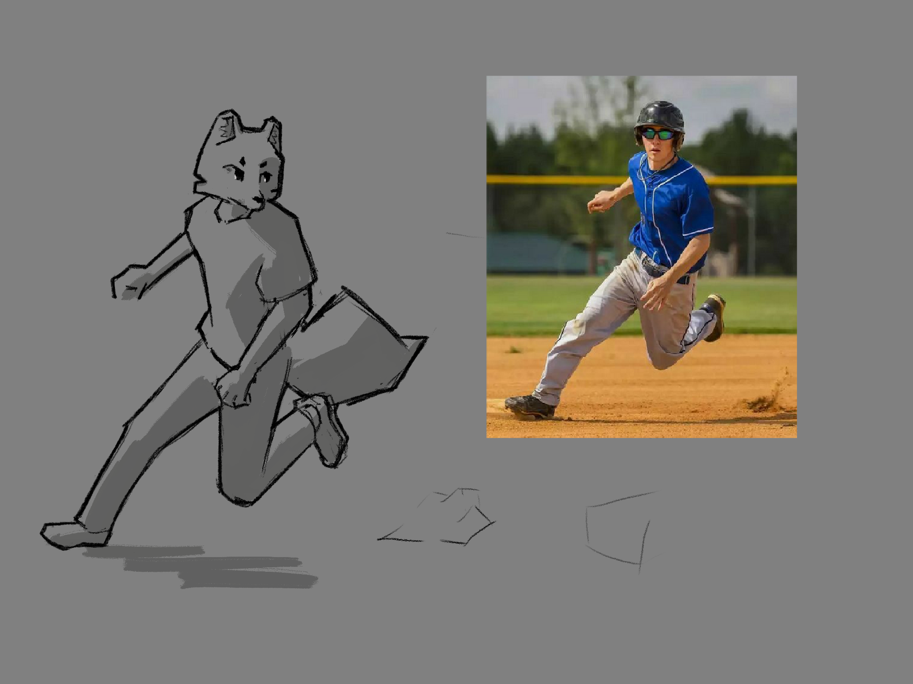
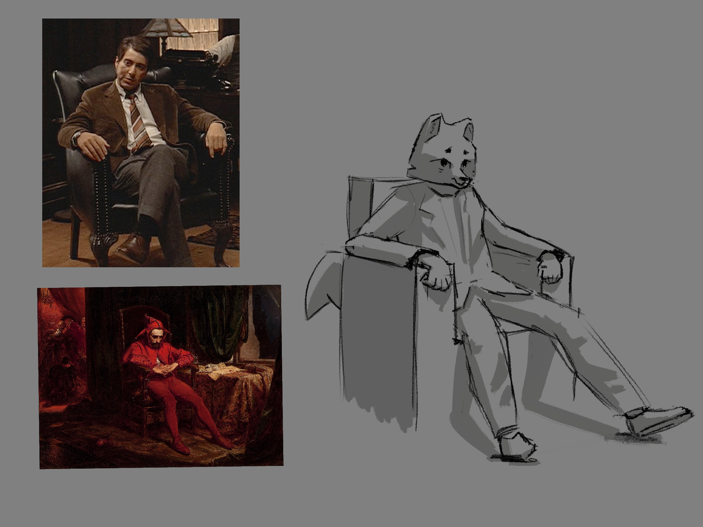

cgt321 portfolio

Class still-life project.
 Pfarrkirche Maria am Berg in Hallstatt, Austria >>>
Pfarrkirche Maria am Berg in Hallstatt, Austria >>>
Loosely based off of a photo I took.
 St. Leo Oratory >>>
St. Leo Oratory >>>
Recalled moment while attending mass. A window above Mary cast light through incense and onto a little girl wearing a veil.
 Boston Dynamics' PETMAN >>>
Boston Dynamics' PETMAN >>>
 Grindstone Media Group >>>
 The Godfather Part II >>>
Stańczyk. Jan Matejko >>>